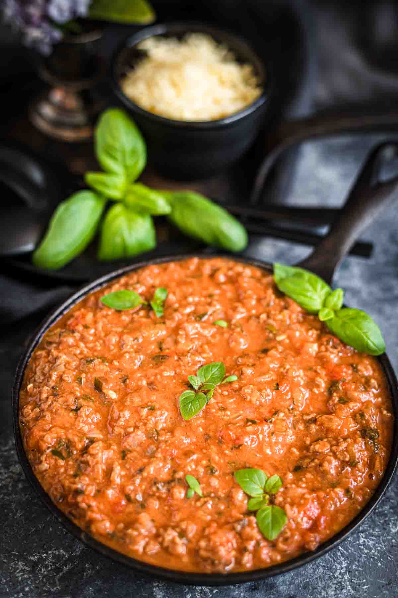

Keto Bolognese Sauce

This bolognese sauce can be so much more than a pasta sauce!
The flavor of this authentic Bolognese Sauce intensifies overnight like
magic. Have it in the fridge and use it for any of your Keto Meal Plans,
because I tell you. This is the sauce you are going to have with you at
all times.
Ingredients
- minced meat of choice
- diced bacon
- tomato sauce
- heavy cream
- diced celery
- fresh onion
- garlic cloves
- fresh oregano
- fresh marjoram
Instructions
-
Using a cooking pot, start with browning your onion with 1 Tablespoon of
Olive oil.
-
Once the onion is caramelized halfway, add garlic and cook it for
another few minutes.
-
Add your bacon which you have cut into small cubes and your minced meat.
Mix it together and cook for approximately 10 to 15 minutes.
-
Once your minced meat and bacon are cooked for approximately 15 minutes
add celery and all the herbs as well as salt and pepper.
-
Once your minced meat and bacon are cooked for approximately 15 minutes
add celery and all the herbs as well as salt and pepper.
-
Once everything is cooked add tomato sauce together with heavy cream and
mix all properly.
- Cover with the top and cook it for another 40 minutes.